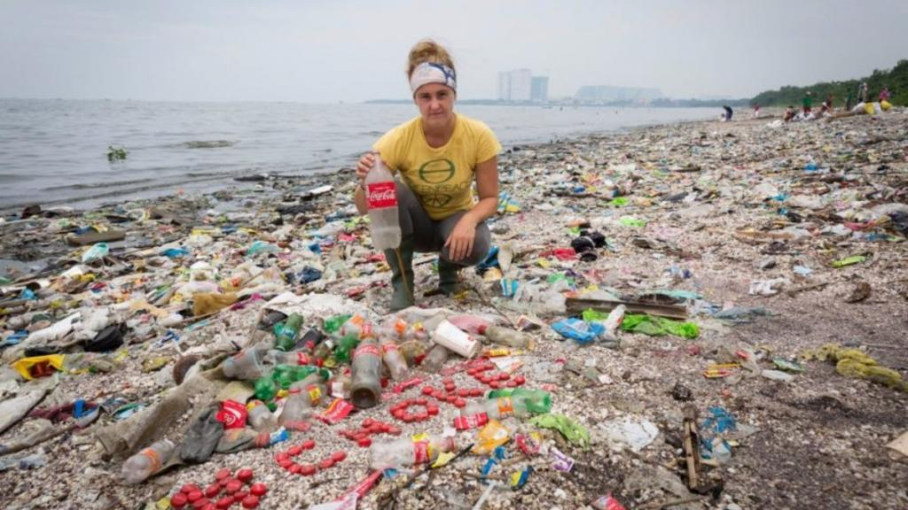
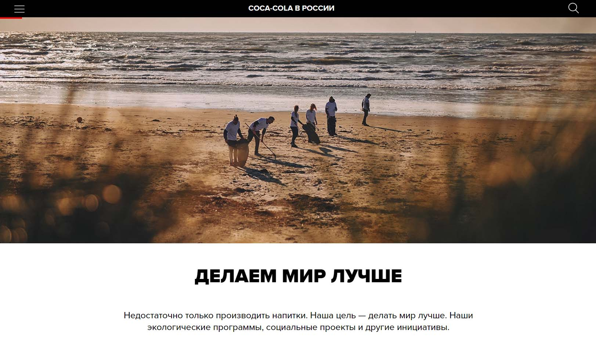
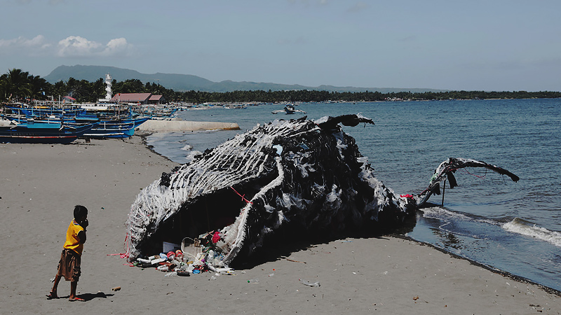

Coca-cola
“Компания Сoca-Cola в ближайшем будущем не планирует отказываться от одноразовых пластиковых бутылок, так как напитки в такой упаковке пользуются большим спросом у потребителей” (вице-президент компании Беа Перес).
Производя многократно признанный вредным для здоровья продукт, взращенный маркетологами на культе попсы, в лучших традициях общества потребления, компания Coca-cola является одним из мировых лидеров пластикового загрязнения.
Об этом говорят результаты 239 бренд-аудитов, проведённых волонтёрами движений Breakfreefromplastic и Greenpeace в 42 странах на шести континентах.
По результатам российских бренд-аудитов, проведённых в трёх регионах, победителем также стала Coca-Cola. Ей принадлежит 16% всего найденного пластика. Следом за ней идут Pepsi Co — 12%, Heineken International — 10% и Mars Incorporated — 10%. У 40% найденного пластика не удалось установить производителя.

Корпорация Coca-cola будучи не в состоянии решить техническую проблему, связанную с безопасным дизайном жизни упаковки, с полным нарушением этого принципа проектирования и осознанием факта экологической катастрофы — продолжает развивать свой эко-террористический бизнес.
Корпорация уже нанесла непоправимый ущерб природе, который наблюдают все, от жителей океанических островов, до обычных горожан.
В России трудно найти место отдыха на природе где бы не обнаруживался их мусор распадающийся на токсичный микропластик.
Coca-cola выпускает 3500 бутылок в секунду и стремительно увеличивает свое производство.
Coca-cola ни раз подвергалась осуждению со стороны научного сообщества. Однако, имея огромный опыт противостояния различным медицинским, экологическим и политическим объединениям, при поддержке огромного капитала и высококлассных маркетологов, ведет борьбу за свою экспансию.
Корпорация использует технологии гринвошинга пытаясь убедить общественность в том, что она якобы дружественная природе организация и вообще — «лидер экологических инноваций».

Достигается данный эффект за счет новостного, событийного и контент-маркетинга, включая проведение экологических мероприятий.
Зарабатывая 10 000 000 000 долларов годовой прибыли и являясь мировым лидером пластикового загрязнения, подобные мероприятия ни составляют ощутимых затрат для корпорации ни нивелируют её разрушительную антиприродную деятельность.
Но выпуская свой «экоконтент» на регулярной основе, кока-кола добивается лояльности к своему бренду, вне зависимости от математической оценки её положительного и отрицательного вклада в экологическую обстановку.
Ввиду огромных масштабов мирового производства их тары по сравнению с ничтожным эффектом работы отдела корпоративной социальной ответственности, это соотношение близко к соотношению 0% к 100%. Где 0 — пропорциональный положительный вклад в экологию, а 100% --наносимый природе вред.
Корпорация уделяет большое внимание пиару среди молодежи склонной к экологическим интересам, выступает спонсором мероприятий с их участием. Добивается лояльности той аудитории, которая, гипотетически, должна самым активным образом противостоять корпорации.
Маркетологи кока-колы формируют зелëные мифы в отношении поставленных целей, которые якобы должны разрешить или нивелировать усугубляющуюся экологическую катастрофу, разворачивающуюся на фоне их бизнеса.
В частности, компания ведет речь о достижении в будущем равного объема производимых и переработанных бутылок.
Однако даже если поверить в реалистичность этих планов.
Во-первых:
— эта стратегия никоим образом не затрагивает проблемы выброшенного и выбрасываемого в природу мусора.
Во-вторых:
— не существует технологий замкнутого цикла переработки и производства пластиковых бутылок. Из бутылки можно произвести бутылку 1 или 2 раза, с учетом добавления нового сырья и других затрат. Поэтому поддерживать этот процесс ресайклинга хоть сколько-нибудь долго невозможно. На входе все равно будет новое сырьë, на выходе — непригодный к переработке пластиковый мусор в огромных масштабах.
В-третьих:
— проблема переработки не решает проблему истощения ресурсов планеты, связанную с производством и логистикой корпорации.
Таким образом озвученные кока-колой планы 10-летних достижений не только кощунственны ввиду продолжения пластикового загрязнения планеты в эту десятилетку, труднодостижимы, и само их достижение ощутимо ни повлияет на экологический эффект от корпорации.
В свете научного подхода к анализу деятельности корпорации Кока-кола, а не в свете их самопиара и купленной спонсорством лояльности экоинфобизнесменов, — совершенно непонятна цена той платы, которую платит человечество закрывая глаза на их мародерский по отношению к планете бизнес.
Обсуждение
Добавьте свои замечания и дополнения к статье в комментарии